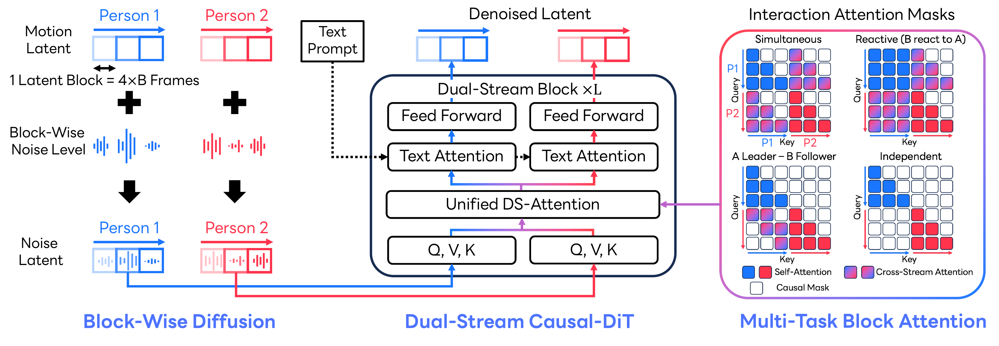

Case 1
180 FramesThe two individuals maintain their original posture, while their bodies continue to rotate 90 degrees clockwise to the right.
Text-conditioned human interaction generation must capture both long-range temporal causality within each individual and tightly coupled coordination between partners. Existing interaction diffusion models typically denoise full sequences using bidirectional attention, which obscures causality and hinders streaming and long-horizon generation. Autoregressive alternatives enforce causality but often suffer from temporal drift, leading to coordination degradation and unstable interaction dynamics over time. We propose InterCMDM, a block-causal latent diffusion framework for autoregressive two-person interaction generation. InterCMDM introduces a Dual-Stream Causal Diffusion Transformer that maintains separate causal streams for each person while modeling inter-person dependencies via unified dual-stream attention with multi-task attention masks. These masks unify interaction modeling within a single attention mechanism and support diverse coordination behaviors, including simultaneous actions, reactive responses, leader-follower dynamics, and independent motion. By training a single model across these mask configurations as a form of data augmentation, InterCMDM enables controllable interaction generation by simply selecting the desired attention mask at inference time. Finally, a block-wise diffusion objective enables stable latent rollout over long sequences without repeated decode-encode cycles. InterCMDM achieves state-of-the-art performance on InterHuman and Inter-X, improving text-motion alignment, realism, and long-horizon continuity.

InterCMDM is a block-causal latent diffusion framework for structured two-person interaction generation. Motion sequences are encoded into compact latent blocks, denoised by a Dual-Stream Causal Diffusion Transformer, and decoded back into coordinated motion while preserving autoregressive temporal structure. Each person is encoded independently with a shared temporal motion VAE, which downsamples motion into compact latent tokens and partitions those tokens into temporal blocks. The transformer keeps separate streams for Person 1 and Person 2, then couples them through unified masked attention and text cross-attention. The block-causal mask allows tokens to use the current and previous blocks while blocking future context. At inference, selectable masks control coordination modes including simultaneous interaction, reactive response, leader-follower dependency, and independent motion. Generation rolls out clean latent blocks autoregressively and decodes them into long-horizon two-person motion without repeated decode-encode prefix cycles.
Single-prompt 180-frame comparisons between InterMask and InterCMDM.
The two individuals maintain their original posture, while their bodies continue to rotate 90 degrees clockwise to the right.
These two are walking around in a circle while holding hands.
One is observing the motion of a cardboard while the other maintains their hold on the cardboard.
One person falls down, and the other person squats down in front of them, attempting to lift them up.
Both persons bend over, squat with bent knees, and swing their arms downward from the upper right to the front of their legs.
The first person keeps walking, and the second picks up a piece of paper and takes two steps to catch up to the first person. The second pats the first person with the paper, causing the first person to turn around.
Two individuals are seated on chairs, with one person seated behind the other.
Two people crouch down and touch the ground with their hands.
Autoregressive prompt chains composed from multiple 120-frame segments.
@inproceedings{yu2026intercmdm,
title={InterCMDM: Block-Causal Diffusion for Autoregressive Human Interaction Generation},
author={Yu, Qing and Fujiwara, Kent},
booktitle={ECCV},
year={2026}
}